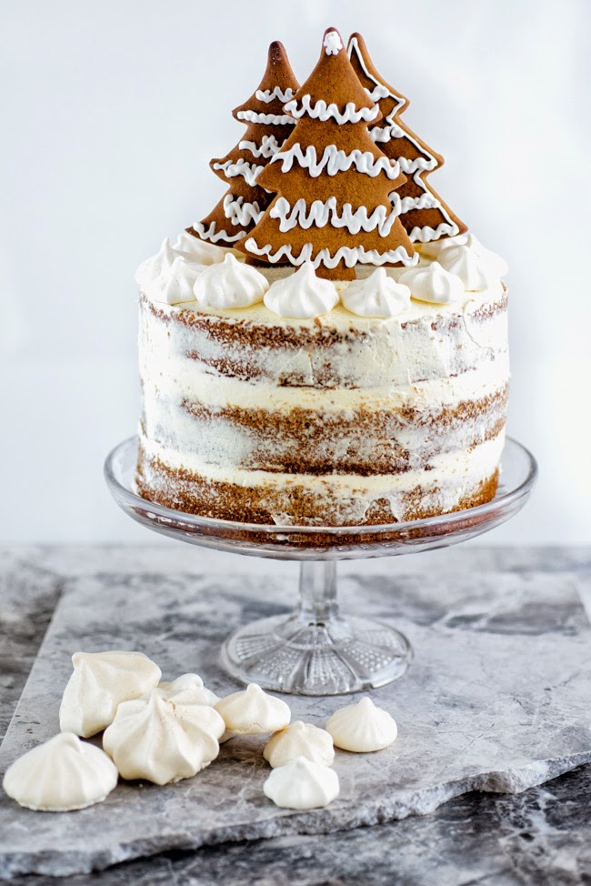
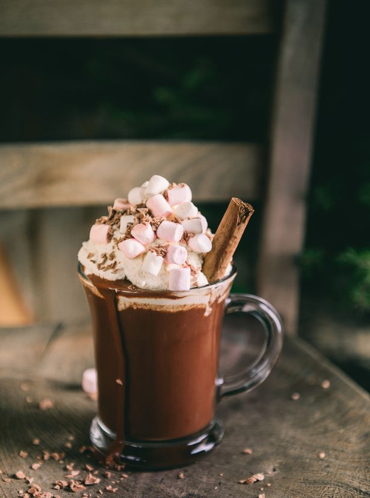
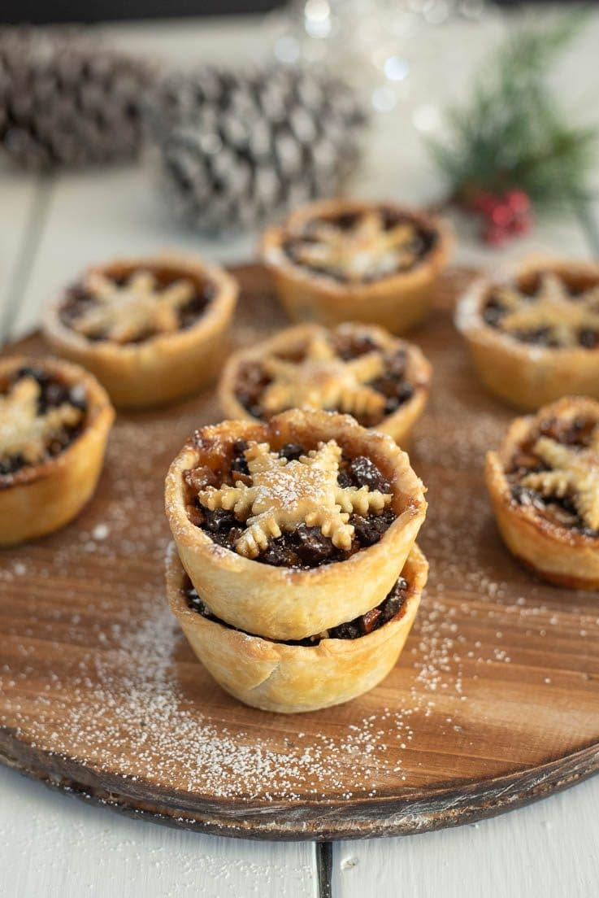

WHO WE ARE
Founded by a group of Christmas savvy students, we had a vision of a Christmas Miracle to bring you Hot sweet spiced drinks and a cosy place to relax and study all year round.
OUR VISION
As part of our Christmas spirit campaign in collaboration with the cafe, we donate 30% of all our profits to Make a Wish Foundation because we believe every child deserves something special everyday.
WHERE TO FIND US
We are nestled in a cosy corner of the City of Hull, specifically 10 Newland Avenue, HU6 7RP.
CONTACT US
Drop us a call on 01482 334645 or email us at thejinglecafe@gmail.com to book a table or find out our delicious menu of cakes and hot beverages. Please come along, we can't wait for you to join us and together we can embrace the Christmas spirit!




